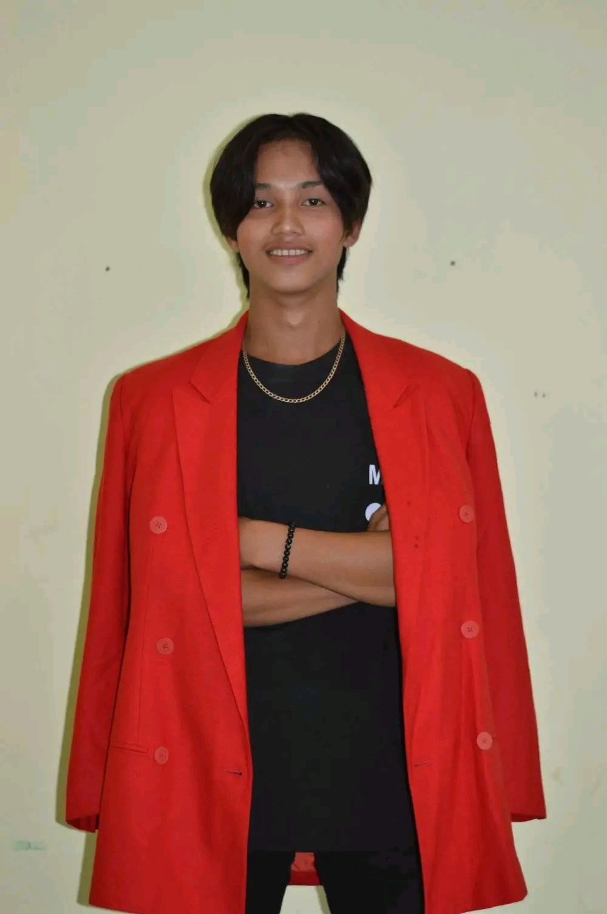

I'm Vhic Villacillo
ATP Student • Problem Solver • Web Learner
I am a Senior High School graduate from Lyceum of Aparri. My journey in ATP helped me develop skills in Microsoft applications, problem-solving, HTML, CSS, and technology.

Vhic Villacillo
ATP Student
Lyceum of Aparri
A little about me.
Who I Am
My name is Vhic Villacillo. I am an ATP student and a Senior High School graduate for the academic year 2025–2026 at Sta. Clara, Gonzaga, Cagayan.
My Goal
My goal is to continue learning technology, improve my computer skills, and develop useful projects that can help me grow personally and professionally.
What I Learned
During my studies, I learned how to use Microsoft applications, solve problems, and create basic websites using HTML and CSS.
My Mindset
I believe that learning is a continuous process. Every problem is an opportunity to learn something new and improve myself.
My journey.
Senior High School Graduate
Lyceum of Aparri
ATP Student
Technology & Problem Solving
Developed practical skills in Microsoft applications, problem-solving, HTML, CSS, and basic web development.
What I can do.
Microsoft Applications
Experience using Microsoft applications for documents, presentations, school activities, and productivity.
Problem Solving
Ability to analyze tasks, identify problems, think of possible solutions, and complete activities effectively.
HTML
Basic knowledge of HTML for creating website structures and organizing webpage content.
CSS
Basic knowledge of CSS for styling websites, creating layouts, and improving visual design.
Things I've worked on.
Personal Portfolio
A personal website designed to introduce myself, showcase my skills, education, and projects.
HTMLMicrosoft Activities
School documents, presentations, and activities created using Microsoft applications.
Microsoft ProductivityProblem-Solving Tasks
Academic tasks where I practiced analyzing problems and developing practical solutions.
Thinking SolutionsWeb Design Practice
Practice websites created while learning webpage structure, styling, layouts, and responsive design.
HTML CSSView My Resume.
Want to learn more about my education, skills, experience, and achievements? You can view my complete resume on Canva.